样本及样本函数的分布¶
0 总结¶
Note
1 总体与样本¶
- 总体：
- 所研究对象的全体称为总体。
- 总体中的每个具体对象称为个体。
- 总体中所包含的个体总数叫做总体容量。
- 简单随机样本：
- 从总体中抽取若干个体进行观察试验，以获得有关总体的信息，这一抽取过程称为抽样，所抽取的部分个体称为样本。
- 样本中所包含的个体数目称为样本容量。
- 简单随机抽样的样本的特点：随机性，代表性，独立性。
- 每次抽样得到的具体数值称为样本值。
-
总体、样本、样本值的关系
- 总体分布决定了样本取值的概率规律，也就是样本取到样本值的规律，因而可以由样本值去推断总体
- 样本的联合分布函数
\begin{equation} F(x_1, x_2, \cdots, x_n) = \prod_{i = 1}^{n} F_X(x_i) \end{equation}
- 样本的联合概率密度
\begin{equation} f(x_1, x_2, \cdots, x_n) = \prod_{i = 1}^{n} f_X(x_i) \end{equation}
- 样本的联合分布律
\[\begin{equation} P \left\{ X_1 = x_1, X_2 = x_2, \cdots, X_n = x_n \right\} = \prod_{i=1}^{n} p_X(x_i) \end{equation}\]
2 直方图与样本分布函数¶
- 直方图
- 组距：横坐标每格代表的间距。
- 分点应比样本观测值多取一位有效数字。
- 作用：样本容量足够大时，落在小区间的频率近似为其概率，所以直方图可以大致反映随机变量的概率分布。
-
样本分布函数
-
样本分布函数记为
\[\begin{equation} F_n(x) = \begin{cases} 0 & x < x_{(1)}\\ \sum_{j = 1}^i f_i & x_{(1)} \le x \le x_{(k)}\\ 1 & x \ge x_{(k)} \end{cases} \end{equation}\] -
由伯努利大数定律可知，\(F_n(x)\) 按概率收敛于 \(F(x)\)。
-
3 样本函数及其概率分布¶
- 统计量
- 统计量是样本函数，是一个随机变量。
- 统计量对应的样本函数 \(g(X_1, X_2, \cdots, X_n)\) 中不含任何未知参数。
-
常用的统计量
- 样本均值 \(\bar X = \dfrac{1}{n}\sum_{i = 1}^n X_i\)
- 样本方差 \(S^2 = \dfrac{1}{n - 1}\sum_{i = 1}^n(X_i - \bar X)^2 = \dfrac{1}{n - 1}(\sum_{i = 1}^n X_i^2 - x {\bar{X}}^2)\)
- 样本标准差 \(S = \sqrt{S^2}\)
- 样本 \(k\) 阶原点矩 \(A_k = \dfrac{1}{n}\sum_{i = 1}^n X_i^k\)
- 样本 \(k\) 阶中心矩 \(B_k = \dfrac{1}{n}\sum_{i = 1}^n (X_i - \bar X)^k\)
- 样本最小值 \(X_{(1)} = \max \left\{X_1, X_2, \cdots, X_n\right\}\)
- 样本最大值 \(X_{(n)} = \max \left\{X_1, X_2, \cdots, X_n\right\}\)
常用结论
若总体 \(X\) 的 \(E(X) = \mu, D(X) = \sigma^2\)，则
- \(E(\bar X) = \mu, D(\bar X) = \dfrac{\sigma^2}{n}\)
- \(E(S^2) = \sigma^2, D(S^2) = \dfrac{2\sigma^4}{n - 1}\)
- \(E(B_2) = \dfrac{n - 1}{n}\sigma^2, D(B_2) = \dfrac{2(n - 1)\sigma^4}{n^2}\)
若总体 \(X\) 的分布函数为 \(F(x)\)，则
- \(F_{\max}(x) = [F(x)]^n\)
- \(F_{\min}(x) = 1 - [1 - F(x)]^n\)
有关 \(E(S^2)\) 的一点细节
\[ \begin{align*} E(S^2) & = E \left [\dfrac{1}{n - 1}\sum_{i = 1}^n (X_i - \bar X)^2 \right ] \\ & = E \left [\dfrac{1}{n - 1} \left (\sum_{i = 1}^n X_i^2 - n\bar X^2 \right ) \right ] \\ & = \dfrac{1}{n - 1} \left [\sum_{i = 1}^n E(X_i^2) - nE(\bar X^2) \right ] \\ & = \dfrac{1}{n - 1} \left \{ \sum_{i = 1}^n \left \{ D(X_i) + [E(X_i)]^2 \right \} - n \left \{ D(\bar X) + [E(\bar X)]^2 \right \} \right \} \\ & = \sigma^2 \end{align*} \]这里注意 \(\bar{X}\) 不能当作常量，故算 \(E(\bar{X}^2)\) 的时候不能直接当成 \(\bar{X}^2\)，要当作样本变量来处理。
-
正态总体的两个抽样分布定理
- \(X_1, X_2, \cdots, X_n\) 是来自正态总体 \(N(\mu, \sigma^2)\) 的样本，\(\bar x\) 是样本均值，则随机变量
\[\begin{equation} u = \dfrac{(\bar X - \mu)}{\sigma / \sqrt{n}} \sim N(0, 1) \end{equation}\]- 设 \(X \sim N(\mu_1, \sigma_1^2), Y \sim N(\mu_2, \sigma_2^2)\) 分别独立地从总体 \(X\) 和总体 \(Y\) 中抽取样本 \(X_1, X_2, \cdots, X_n\) 及 \(Y_1, Y_2, \cdots, Y_n\)，样本均值分别为 \(\bar X\) 和 \(\bar Y\)。则随机变量
\[\begin{equation} u = \dfrac{(\bar X - \bar Y - (\mu_1 - \mu_2))}{\sqrt{\frac{\sigma_1^2}{n_1} + \frac{\sigma_2^2}{n_2}}} \sim N(0, 1) \end{equation}\]Tip
由 \(\bar X - \bar Y \sim N \left ( \mu_1 - \mu_2, \dfrac{\sigma_1^2}{n_1} + \dfrac{\sigma_2^2}{n_2} \right )\) 推出。
4 \(\chi^2\) 分布¶
-
设 \(X_1, X_2, \cdots, X_n\) 相互独立分布，都服从 \(N(0, 1)\)，则称随机变量 \(\chi^2 = X_1^2 + X_2^2 + \cdots + X_n^2\) 服从自由度为 \(n\) 的 \(\chi^2\) 分布，记为 \(\chi^2 \sim \chi^2(n)\)。这里自由度是独立的服从标准正态分布的随机变量的个数。
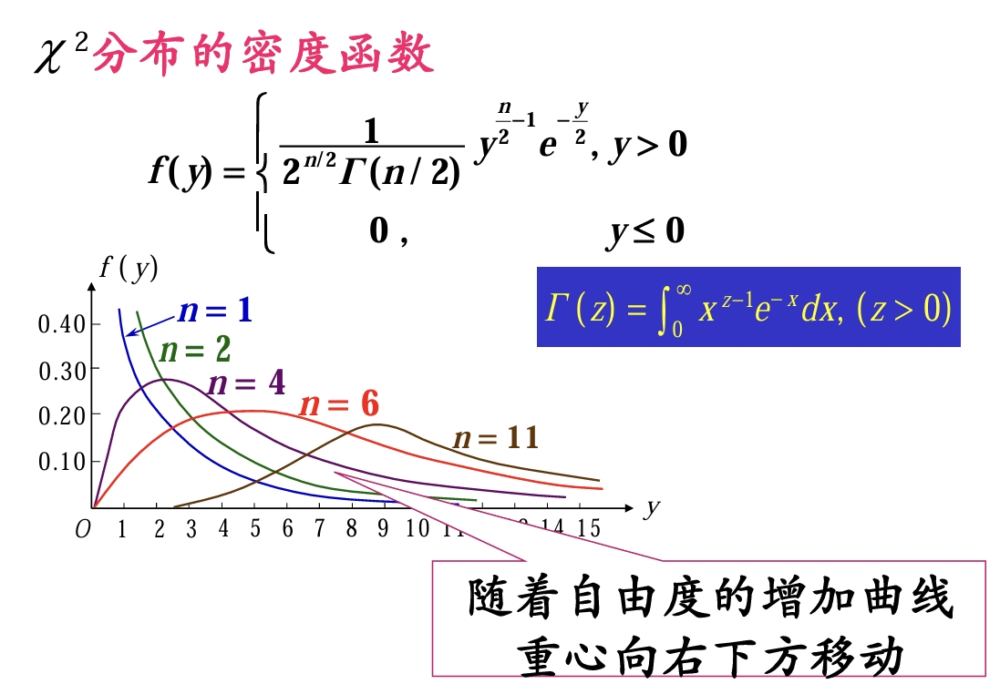
-
\(\chi^2\) 的性质
- 若 \(\chi^2 \sim \chi^2(n)\)，则 \(E(\chi^2) = n,D(\chi^2) = 2n\)。
- 若 \(X \sim \chi^2(n_1), Y \sim \chi^2(n_2)\)，且 \(X, Y\) 相互独立，则 \(X + Y \sim \chi^2(n_1 + n_2)\)。
- 当 \(n\) 充分大时，\(\chi^2\) 近似服从 \(N(n, 2n)\)，\(\dfrac{\chi^2(n) - n}{\sqrt{2n}}\) 近似服从 \(N(0, 1)\)。
-
设 \(\chi^2 \sim \chi^2(n)\)，对给定正数 \(\alpha(0 < \alpha < 1)\)，把满足条件
\[\begin{equation} P \left\{ \chi^2 > \chi_{\alpha}^2(n)\right\} = \int_{\chi_{\alpha}^2(n)}^{+\infty}f(x)dx = \alpha \end{equation}\]的点 \(\chi_{\alpha}^2(n)\) 称为 \(\chi^2(n)\) 分布的上 \(\alpha\) 分位点。
并且当 \(n\) 充分大时， \(\chi_{\alpha}^2 \approx n + \sqrt{2n}u_{\alpha}\)，其中 \(u_{\alpha}\) 是标准正态分布的上 \(\alpha\) 分位数。
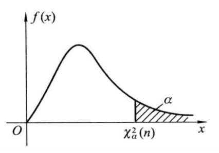
-
相关定理
-
设 \(X_1, X_2, \cdots, X_n\) 是来自总体 \(N(\mu, \sigma^2)\) 的样本，则随机变量
\[\begin{equation} \chi^2 = \dfrac{1}{\sigma^2}\sum_{i = 1}^n (X_i - \mu)^2 \sim \chi^2(n) \end{equation}\] -
设总体 \(X\) 服从正态分布 \(N(\mu, \sigma^2)\)，从总体 \(X\) 中抽取样本 \(X_1, X_2, \cdots, X_n\)，样本均值和样本方差分别为 \(\bar X\) 和 \(S^2\)，则有
- \(\bar X\) 和 \(S^2\) 相互独立。
- \(\dfrac{(n - 1)S^2}{\sigma^2} = \dfrac{1}{\sigma^2}\sum_{i = 1}^{n}(X_i - \bar X)^2 \sim \chi^2(n - 1)\)
证明 \(\dfrac{(n - 1)S^2}{\sigma^2} \sim \chi^2(n - 1)\)
\[\begin{align*} \dfrac{\sum (x_i - \bar x)^2}{\sigma^2} & = \dfrac{\sum [(x_i - \mu) + (\mu - \bar x)]^2}{\sigma^2} \\ & = \dfrac{\sum (x_i - \mu)^2}{\sigma^2} - \dfrac{(\mu - \bar x)^2}{\sigma^2 / n} \\ & = \chi^2(n) - \chi^2(1) \\ & = \chi^2(n - 1) \end{align*}\] -
5 t 分布¶
-
设 \(X \sim N(0, 1), Y \sim \chi^2(n)\)，且 \(X\) 与 \(Y\) 独立，则称随机变量 \(T = \dfrac{X}{\sqrt{Y/n}}\) 服从自由度为 \(n\) 的 t 分布，记作 \(T \sim t(n)\)。这里的自由度源于 \(\chi^2(n)\) 的自由度。特殊的，\(n = 1\) 时为柯西分布。
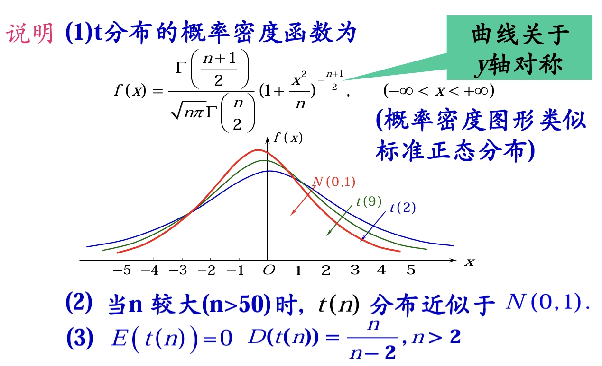
-
设 \(t \sim t(n)\)，对给定正数 \(\alpha(0 < \alpha < 1)\)，把满足条件
\[\begin{equation} P \left\{ t(n) > t_{\alpha}(n)\right\} = \int_{t_{\alpha}(n)}^{+\infty}f(x)dx = \alpha \end{equation}\]的点 \(t_{\alpha}(n)\) 称为 \(t(n)\) 分布的上 \(\alpha\) 分位点。
特殊地，有 \(-t_{\alpha}(n) = t_{1 - \alpha}(n)\)。
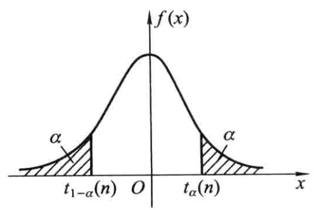
-
相关定理
-
设 \(X_1, X_2, \cdots, X_n\) 是来自总体 \(N(\mu, \sigma^2)\) 的样本，样本均值为 \(\bar X\)，样本方差为 \(S^2\)，则随机变量
\[\begin{equation} T = \dfrac{\bar X - \mu}{S / \sqrt{n}} \sim t(n - 1) \end{equation}\]Proof
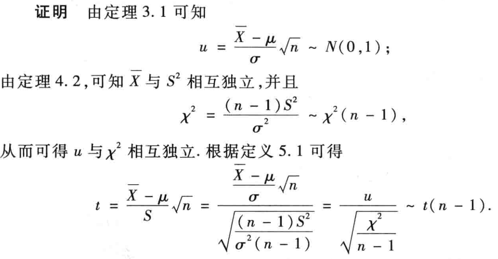
-
设从两个正态总体 \(N_1(\mu_1, \sigma^2), N_2(\mu_2, \sigma^2)\) 中分别独立地抽取样本，样本容量依次为 \(n_1\) 和 \(n_2\)，样本均值依次为 \(\bar X\) 和 \(\bar Y\)，样本方差依次为 \(S_1^2\) 和 \(S_2^2\)。记
\[\begin{equation} S_W = \sqrt{\dfrac{(n_1 - 1)S_1^2 + (n_2 - 1)S_2^2}{n_1 + n_2 - 2}} \end{equation}\]则随机变量
\[\begin{equation} T = \dfrac{\bar X - \bar Y - (\mu_1 - \mu_2)}{S_W\sqrt{\frac{1}{n_1} + \frac{1}{n_2}}} \sim t(n_1 + n_2 - 2) \end{equation}\]Proof

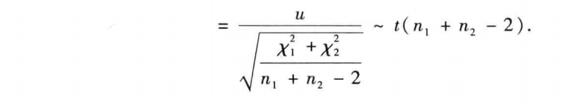
-
6 F 分布¶
-
设 \(X \sim \chi^2(n_1), Y \sim \chi^2(n_2)\)，且 \(X\) 和 \(Y\) 相互独立，则称随机变量 \(F = \dfrac{ X / n_1}{Y / n_2}\) 服从第一自由度为 \(n_1\)， 第二自由度为 \(n_2\) 的 F 分布，记作 \(F \sim F(n_1, n_2)\)。
-
设 \(F \sim F(n_1, n_2)\)，对给定正数 \(\alpha(0 < \alpha < 1)\)，把满足条件
\[\begin{equation} P \left\{ F > F_{\alpha}(n_1, n_2)\right\} = \int_{F_{\alpha}(n_1, n_2)}^{+\infty}f(x)dx = \alpha \end{equation}\]的点 \(F_{\alpha}(n_1, n_2)\) 称为 \(F(n_1, n_2)\) 分布的上 \(\alpha\) 分位点。
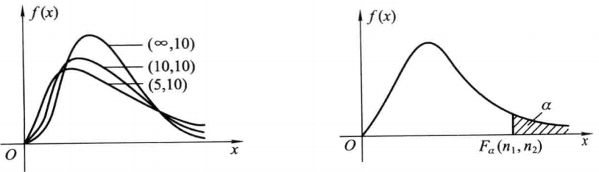
且满足性质 \(F_{1 - \alpha}(n_1, n_2) = \dfrac{1}{F_{\alpha}(n_2, n_1)}\)。
Proof
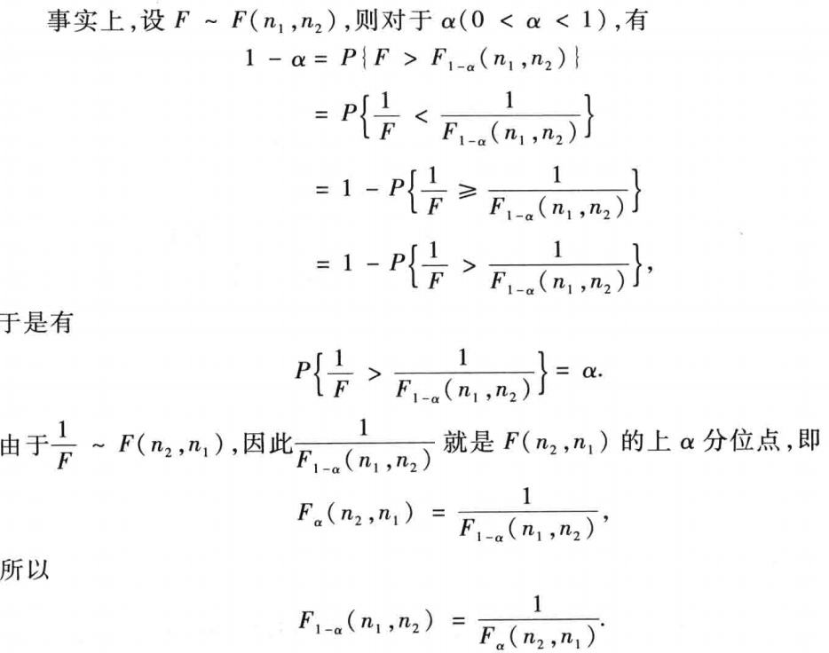
-
相关定理
-
设 \(X_1, X_2, \cdots, X_{n_1}\) 是来自总体 \(N(\mu_1, \sigma_1^2)\) 的样本，\(Y_1, Y_2, \cdots, Y_{n_2}\) 是来自总体 \(N(\mu_2, \sigma_2^2)\) 的样本，且这两个样本相互独立，则随机变量
\[\begin{equation} F = \dfrac{\sum_{i = 1}^{n_1}(X_i - \mu_1)^2 / (n_1 \sigma_1^2)}{\sum_{j = 1}^{n_2}(Y_j - \mu_2)^2 / (n_2\sigma_2^2)} \sim F(n_1, n_2) \end{equation}\] -
设从两个正态总体 \(N(\mu_1, \sigma_1^2), N(\mu_2, \sigma_2^2)\) 中分别独立地各抽取一个样本，它们的样本容量分别为 \(n_1\) 和 \(n_2\)，样本均值依次为 \(\bar X\) 和 \(\bar Y\)，样本方差依次为 \(S_1^2\) 和 \(S_2^2\)。则随机变量
\[\begin{equation} F = \dfrac{S_1^2/\sigma_1^2}{S_2^2/\sigma_2^2} = \dfrac{S_1^2}{S_2^2} \cdot \dfrac{\sigma_2^2}{\sigma_1^2} \sim F(n_1 - 1, n_2 - 1) \end{equation}\]
利用这条定理可以找到 \(\dfrac{S_1^2}{S_2^2}\) 所服从的概率分布。
Tip
\(\dfrac{S}{\sigma}\) 是一个很重要的分式，它可以经过分子分母同时乘以 \((n - 1)\)，结合公式 \(\dfrac{(n - 1)S^2}{\sigma^2} \sim \chi^2(n - 1)\) 变成 F 分布 / t 分布的组成部分。
-
7 例题¶
-
e.g.1

Solution
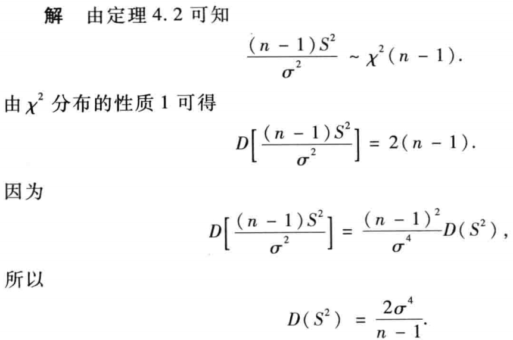
-
e.g.2
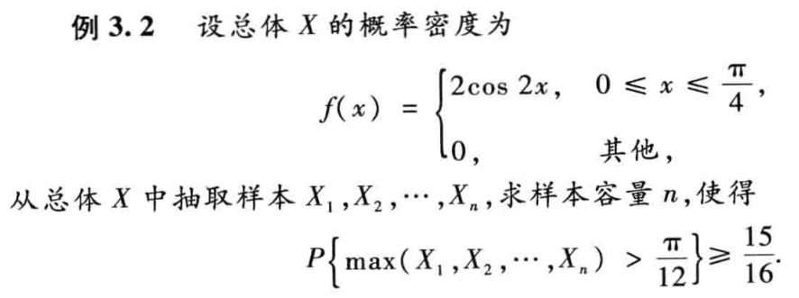
Solution
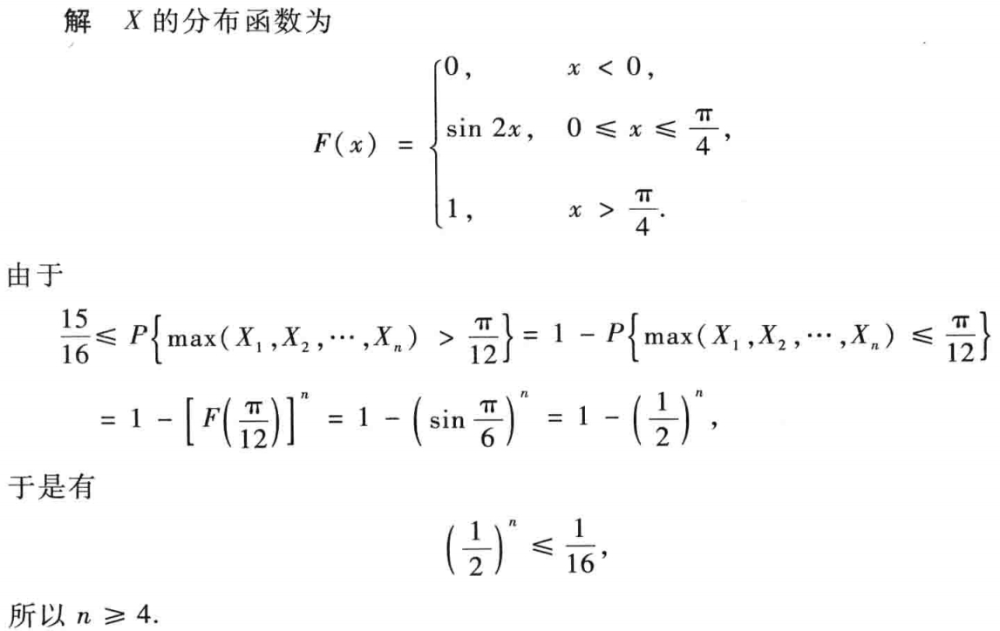
-
e.g.3
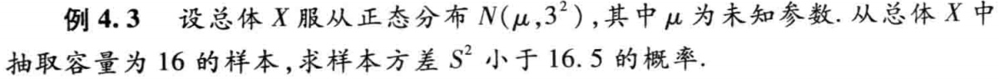
Solution
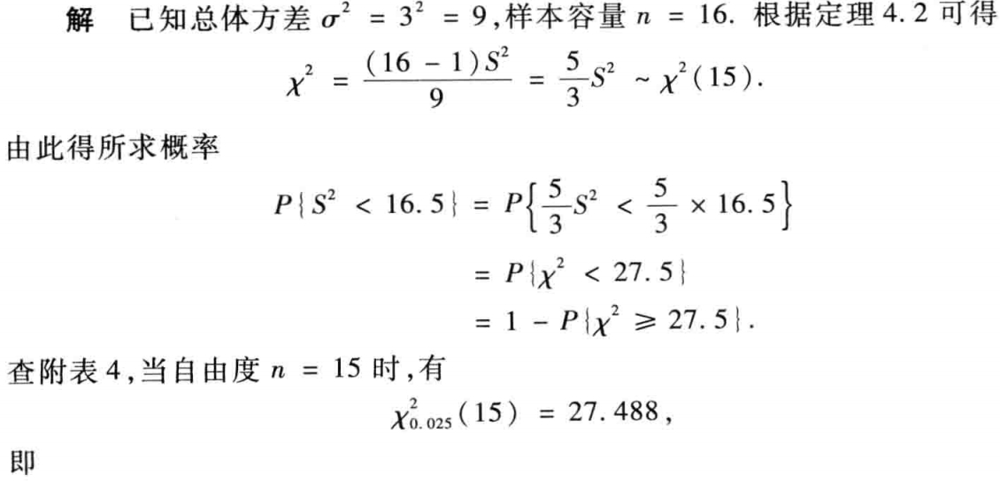

-
e.g.4
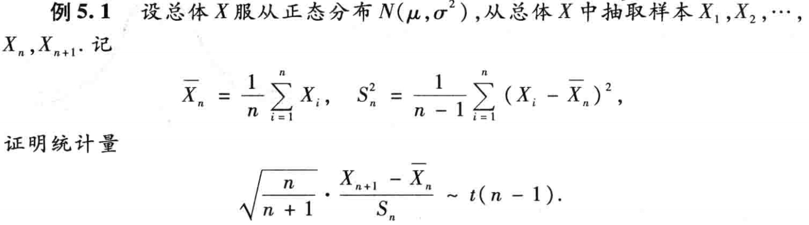
Solution
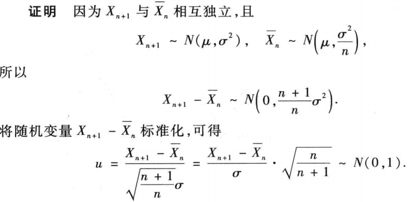
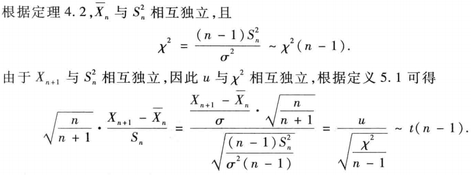
-
e.g.5

Solution
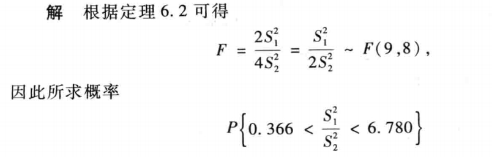
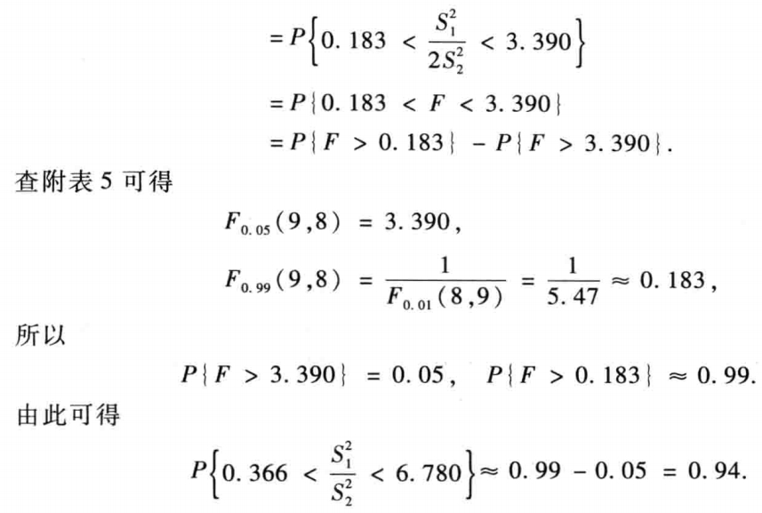
-
e.g.6
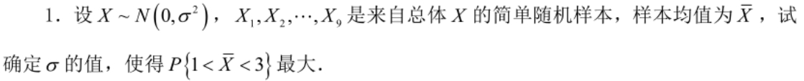
Solution
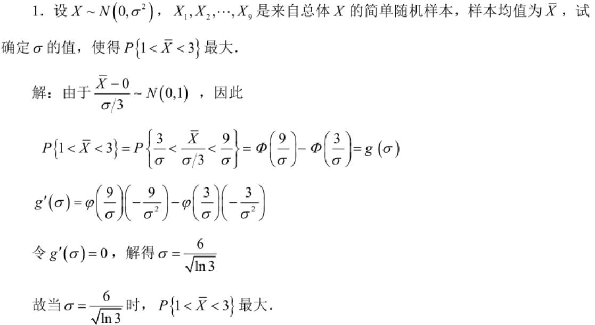